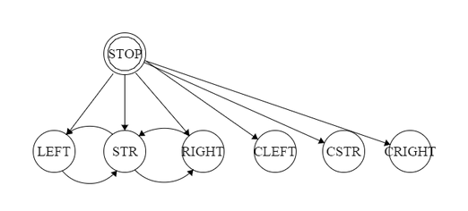

Our complete code, which can be found in our GitHub repository, was used to optimize a pattern of mmovement, power the servos, and control Sparky either autonomously avoiding obstacles, or a manual override.
| Arduino dependencies: | Servo.h |
| Python dependencies: | Serial, sys, socket, math, msvcrt, random, os, numpy, pygame |
NI LabView was used to interface with the camera above the Large Project Building Pool. A LabView VI published data on position of objects within the pool, and a python script captured the data using socket.
For our autonomous tadpole, we used an Arduino Mega as the onboard controller that could operate autonomously, or receive commands from the tadpole command center (the computer running the control scripts) through the serial port over Xbee radio. The Arduino controlled three servos, and 7 status LEDs. It received input from 3 IR sensors positioned at the front of the tadpole’s head.
There are 7 states the the tadpole itself can occupy: Stop, Auto Turn Left, Auto Straight, Auto Right, Command Left, Command Straight, and Command Right. Stop is a commanded state. When the tadpole is in the autonomous modes, it transitions between turning left, going straight, and turning right based on the input from the three IR sensors that act as range finders. If the IR sensor reading is above some threshold (meaning an object is closer than the threshold) then the tadpole will turn in the opposite direction. If the center IR is tripped, then it will turn to the side with the lower reading. The commanded states persistently perform the gait assigned to them, and only change states with user input. Each IR sensor has a corresponding status LED to indicate if its reading is above its threshold. Each state maps to some set of status LEDs. Green is straight, Turns are Yellow, Stop is Read, and the commanded states have the white light on while the auto status do not.
There are two different modes of swimming: the C gait and the S gait. In the C gait, the entire body of the tadpole (expect for the front of the head) curls in the same direction at once. The effect is equivalent to sculling in sailing. Because the head is much more massive than the rest of the body, the remaining segments are largely pushing against the head rather than exerting a torque on it. When in the turn states, the head is oriented in a certain direction, and the rest of the tadpole moves in C gait. In our initial testing over remote control, we found this to be the most effective way to turn.
In the S gait, each servo moves according to a sinusoidal signal, so the entire body of the tadpole looks like an S. This is closer to the movement of an eel or a sea snake. In this motion, every face of the fish is exerting a force on the water in proportion to its cross product with the velocity vector of the tadpole. The S gait is used in the straight modes. During testing with RC control, we were able to find a productive S gait, but it was very difficult to achieve with the setup of the controller (which was for hobby airplanes, and had 4 degrees of control). We hoped that we would be able to achieve a more consistent S pattern through control with the Arduino. In the first testing of the autonomous S gait, the hand-picked parameters seemed to work fairly well.
The most basic code Arduino code did not accept control signals over the Xbee, and was simply ‘deaf’ (but not ‘blind’, it got input from the IRs). Its functionality and process is as follows: at every loop, read in the IR values, set the directional lights, send the IR values back over serial, execute the actions associated with the tadpole state, set the state lights, smooth the servo position and write the values to the servos, and send the state back over serial. Because this “tadpole_nocomms” is probably disconnected, the serial outputs are solely for debugging.
In the Stop state, no servo positions are updated. In the turn states, the head is oriented to the direction of turning and the C gait controls the movement of the final two servos. In the auto state, if the IR sensors no longer sense an obstacle, and some number of cycles of the C gait have been completed, it transitions to Straight. In the straight state, every servo moves in a sinusoidal pattern determined by the parameterization of the S gait. In the auto state, the tadpole transitions to a turn state opposite either side IR being tripped, or to the side with greater clearance if the center IR is tripped.

A detailed description of the firmware design with links to complete source code (github or other repository is helpful). A detailed description of software design with links to complete source code (github or other repository is helpful). Please be sure to include a list of all external software dependencies (eg. OpenCV, Google Voice API, etc.)